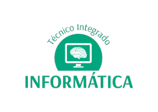
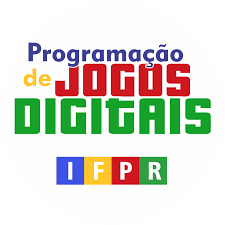

Informática
Progamação de Jogos Digitais

Curso: Infotmática
Apresentação:
O curso Técnico em Informática tem por objetivo a formação de profissionais em nível médio para atuar no mercado de trabalho nas diversas áreas de informática,
com especificidade no desenvolvimento de sistemas computacionais.
Objetivos:
- Desenvolver e operar sistemas, aplicações e interfaces gráficas;
- Organizar a coleta e documentação de informações sobre o desenvolvimento de projetos;
- Desenvolver programas de computadores, integrado à tecnologia de banco de dados, rede de computadores e web;
- Aplicar linguagens e ambientes de programação no desenvolvimento de software;
- Selecionar programas de aplicação a partir da avaliação das necessidades do usuário;
- Identificar o funcionamento e relacionamento entre os componentes de computadores e seus periféricos;
- Identificar os serviços de sistemas operacionais e de rede.
Componentes curriculares de informática

Curso: Programação de Jogos Digitais
Apresentação:
Durante o período de permanência no curso de Programação de Jogos Digitais, os estudantes aprendem a desenvolver, implantar e realizar manutenção em jogos digitais para computadores, consoles e dispositivos móveis.
Além disso, aplicam técnicas de computação gráfica, modelagem, animação e roteirização.
Ademais, desenvolvem ambientes, objetos e modelos a serem utilizados em jogos digitais e criam estratégias de implementação de recursos para acessibilidade e a interatividade entre os usuários e os jogos digitais.
Objetivos:
- O objetivo geral do curso é formar profissionais em nível médio que atuem na área de desenvolvimento de Jogos Digitais com capacidade técnica para atuar no mercado de trabalho
na área de desenvolvimento de jogos eletrônicos com habilidades e competências para analisar, projetar, desenvolver e implantar projetos de Jogos.
- Conforme a proposta educacional da instituição objetiva-se, paralelamente, imprimir um caráter de formação humanística e integral para que, além de técnicos, os profissionais sejam cidadãos éticos,
críticos e reflexivos capazes de compreender e atuar em sua realidade, explorando o uso das tecnologias com responsabilidade socioambiental, privilegiando o desenvolvimento humano sustentável e coletivo.
Componentes curriculares de Programação de Jogos Digitais